AgentCore 产品说明书
让业务用户零代码组建一支"AI 员工团队"，让它们互相协作完成任务，并在权限、审批、成本监控的边界内被安全地管理。
🚀 产品简介
AgentCore 是一个多智能体管理平面，用于创建、配置、编排和监控一群互相协作的 AI 智能体（Agent）。
⚡ 快速上手（5 分钟教程）
安装后运行 agentcore-api，浏览器访问 http://127.0.0.1:8000/
系统自动创建 default Agent，进入聊天页面。
Agent 会显示欢迎引导，引导你完成身份设置和偏好配置。完成后 Agent 会删除 bootstrap.md，后续以新的人设运行。
点击左侧「模型」→「添加模型」→ 填写端点 URL、模型名称、API Key → 测试连接 → 保存。
回到聊天页面，输入问题按 Enter 发送。Agent 会实时流式输出回复。
在「智能体管理」创建多个专精 Agent，在「运行配置」中开启委派能力，主 Agent 即可自动将子任务委派给专家。
📦 安装与部署
环境要求
| 依赖 | 要求 | 说明 |
|---|---|---|
| Python | 3.11+ | 后端运行时 |
| Node.js | 可选 | 仅构建前端 Web UI 需要 |
| Docker | 可选 | 沙箱功能需要 |
| 操作系统 | Win / macOS / Linux | 全平台支持 |
安装方式
| 方式 | 适用场景 | 命令 |
|---|---|---|
| Shell 一键安装 | Linux / macOS | curl -fsSL <url>/install.sh | bash |
| PowerShell 安装 | Windows 推荐 | irm <url>/install.ps1 | iex |
| CMD 安装 | Windows CMD | scripts\install.bat |
| Docker 部署 | 生产环境 | docker compose up -d |
K8s 子路径多实例部署
通过 AGENTCORE_BASE_PATH 环境变量配置，同一镜像可在任意 URL 子路径下运行，支持 N 个实例按路径区分：
env:
- name: AGENTCORE_BASE_PATH
value: /instance01AGENTCORE_DATA_DIR，SQLite 不支持多实例共享写入。
💬 聊天对话
聊天是 AgentCore 的核心交互界面，也是日常使用最多的功能。
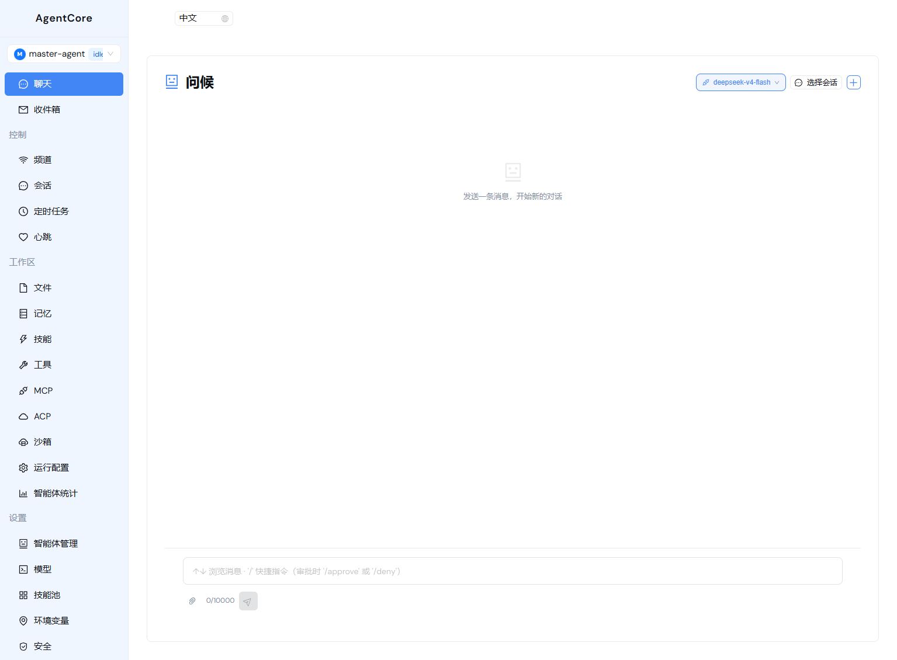
基本操作
| 操作 | 说明 |
|---|---|
| 发送消息 | 在底部输入框输入，按 Enter 发送，Shift+Enter 换行 |
| 文件附件 | 点击附件按钮上传文件（≤20MB），Agent 可读取文件内容 |
| 停止生成 | 流式输出过程中可随时点击中断 |
| 切换模型 | 顶部下拉框可实时切换 LLM 模型 |
| 新建会话 | 点击会话列表顶部的"+"按钮 |
高级功能
🧠 思考链展示
显示 Agent 的推理过程（可折叠），实时带脉冲动画
🔧 工具调用卡片
显示 Agent 调用了哪些工具、参数是什么、返回什么结果
📋 任务计划面板
Agent 使用 write_todos 创建结构化任务清单，带进度条
🤝 子代理委派气泡
显示 Agent 将任务委派给了哪个子 Agent，可点击跳转
Token 消耗
每条消息显示 input/output token 数量
️ HITL 审批卡片
危险操作暂停等待人工审批，支持批准/编辑/拒绝
HITL 审批卡片
当 Agent 执行危险操作（如删除文件）被拦截时，聊天界面会弹出审批卡片：
- 显示操作详情（工具名、参数、原因）
- 提供三种操作：批准 / 编辑后批准 / 拒绝
- 决策后 Agent 按结果继续执行
- 所有决策被记录到审计日志
🤖 智能体管理
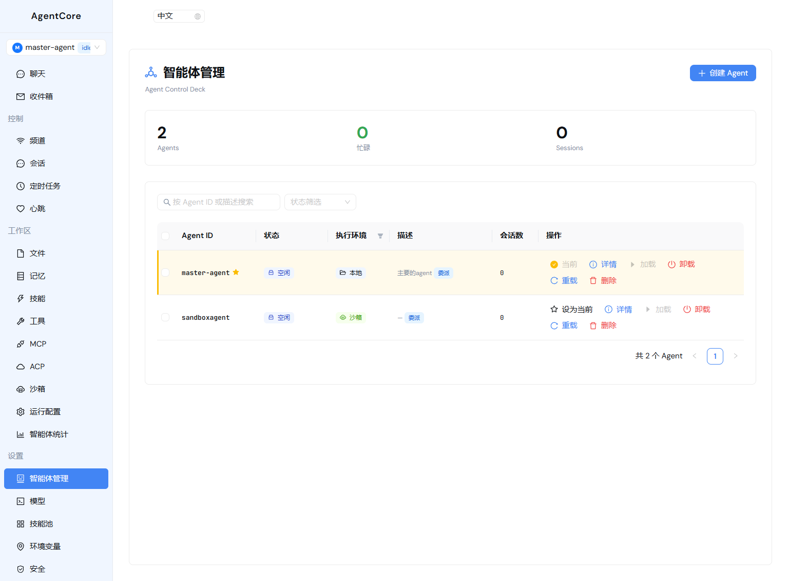
创建 Agent（三步向导）
Agent ID（唯一标识）、描述（一句话职责）、系统提示词（人格和行为规则）
选择模型来源：继承默认 / 选择已有模型 / 自定义。可为不同 Agent 分配不同模型以控制成本。
委派能力、任务拆解（write_todos）、HITL 工具审批、执行环境（本地/沙箱）
管理操作
| 操作 | 说明 | 可恢复 |
|---|---|---|
| 启动 | 预热加载，加快首次响应 | — |
| 停止 | 释放内存，保留磁盘文件 | 下次使用自动重建 |
| 重载 | 热重载工作区，配置变更生效 | — |
| 删除 | 永久删除 Agent 及所有数据 | ⚠️ 不可逆 |
📋 会话管理
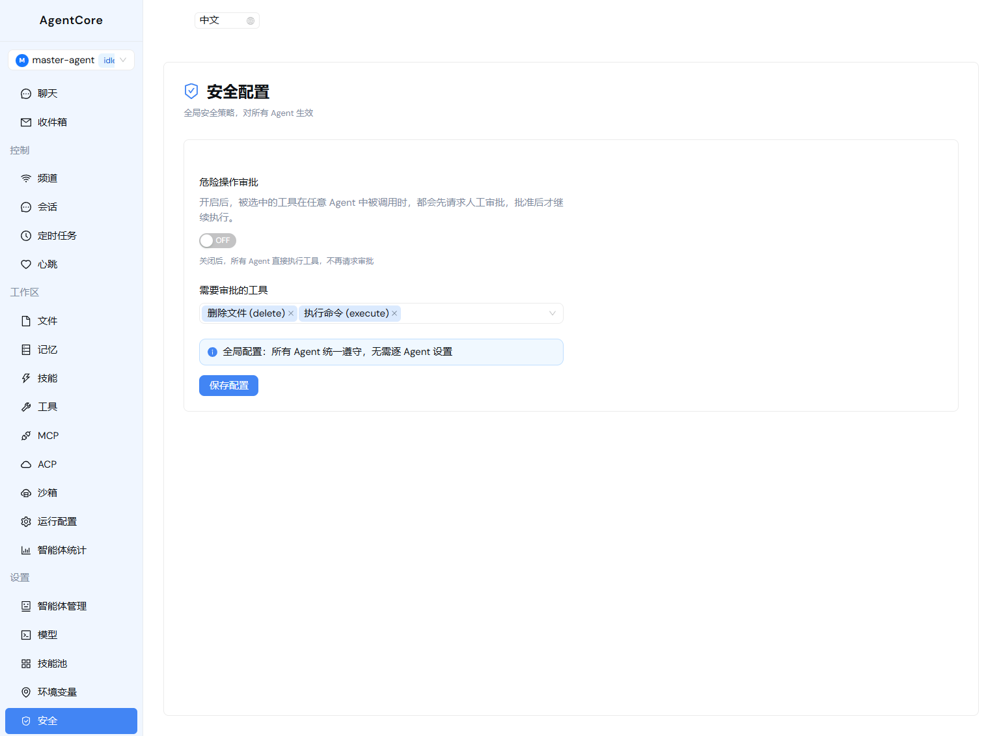
- 会话列表：显示会话 ID、消息数、创建/更新时间
- 会话详情：点击展开查看完整对话记录
- 步骤时间线：回溯 Agent 每一步执行，含 token 消耗
- 按 Agent 筛选：过滤查看特定 Agent 的会话
- 批量删除：一次清理多个会话
- 待审批过滤：只查看有未审批操作的会话
📁 文件管理
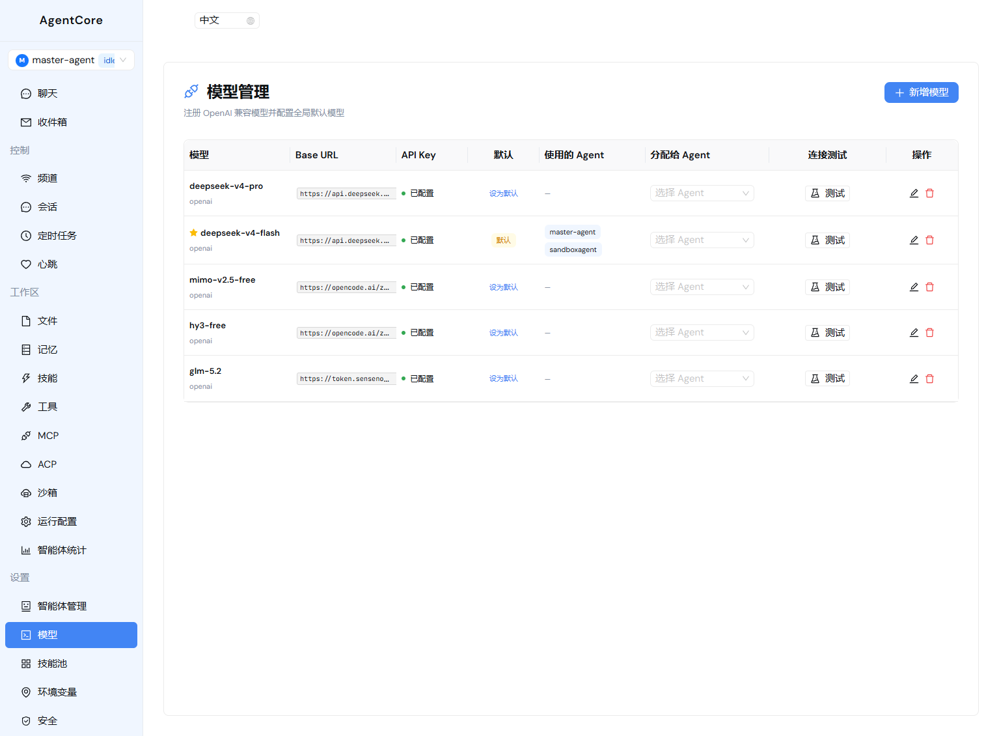
每个 Agent 拥有独立的虚拟文件系统（工作区目录）。
文件类型
| 文件 | 用途 | 可编辑 | 可删除 |
|---|---|---|---|
agent.md | Agent 身份人设 | ✅ | ❌ |
bootstrap.md | 首次引导（完成后自动删除） | ✅ | ✅ |
soul.md | 核心人设（兼容） | ✅ | ❌ |
profile.md | 用户偏好（兼容） | ✅ | ❌ |
操作
- 在线编辑：点击文件可在线编辑，保存后 Agent 下次对话生效
- 上传/下载：支持任意文件上传和下载
- 删除：删除文件或目录（内核文件不可删除）
- 沙箱同步：推送到沙箱 / 从沙箱拉回 / 双向同步
🧠 记忆管理
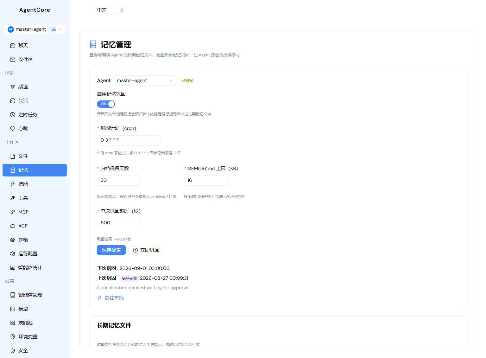
记忆层次
| 层次 | 存储 | 用途 |
|---|---|---|
| 短期记忆 | LangGraph Checkpointer | 会话内的多轮对话上下文 |
| 会话归档 | memory/sessions/YYYY-MM-DD.md | 每日对话归档 |
| 长期记忆 | MEMORY.md / USER.md | 跨会话的事实和偏好 |
记忆巩固（Sleep-time Compute）
系统自动在后台执行记忆巩固：
- 读取最近的会话归档
- Agent 自动分析提取长期有用的事实
- 将提取的事实合并到 MEMORY.md 或 USER.md
- 过期的归档自动移入
archived/目录
⚡ 技能管理
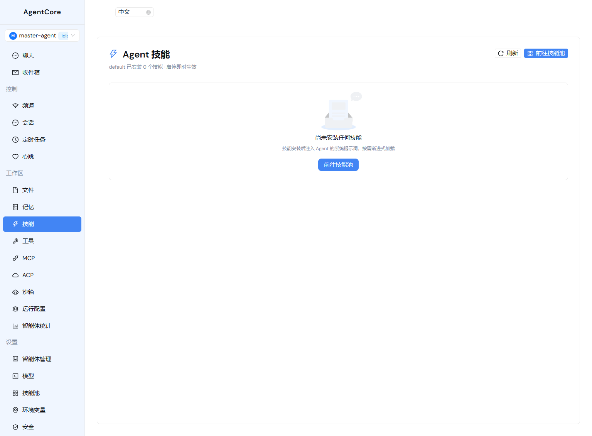
全局技能池

- 浏览、编辑、上传、删除技能文件
- 支持 ZIP 打包上传
- 内置示例技能自动播种
- 从技能池安装到指定 Agent 的
skills/目录 - 支持批量安装到多个 Agent
- 同步更新：技能池更新后一键推送到所有已安装 Agent
🔧 工具管理
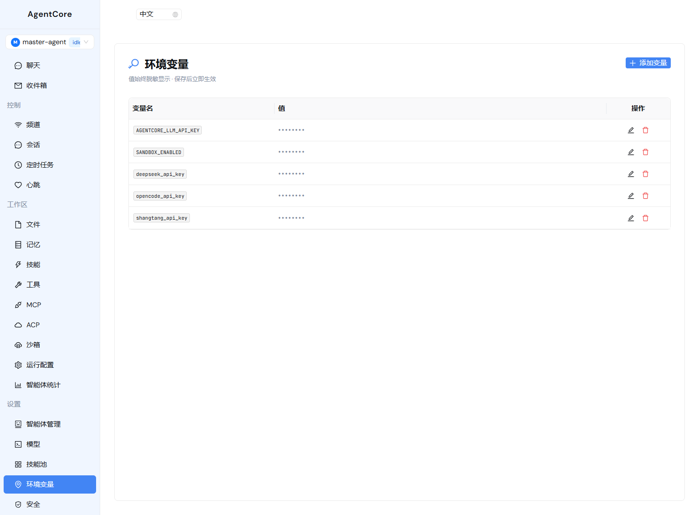
| 工具 | 功能 |
|---|---|
ls | 列出目录内容 |
read_file | 读取文件内容 |
write_file | 写入文件内容 |
edit_file | 编辑文件（精确替换） |
delete | 删除文件或目录 |
glob | 按模式搜索文件名 |
grep | 按正则搜索文件内容 |
execute | 执行 Shell 命令 |
task | 委派任务给子 Agent |
🔗 MCP 服务器
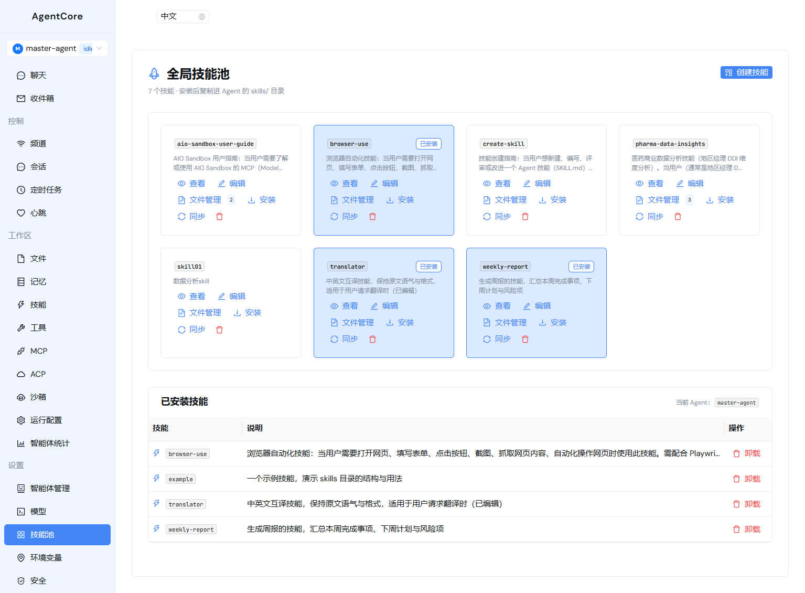
MCP（Model Context Protocol）用于接入外部工具链。
传输方式
stdio— 本地进程sse— HTTP 流streamable_http— 可流式 HTTP
预设模板
- 🌐 Playwright 浏览器自动化
- 📂 文件系统访问
- Web 搜索
🤝 多 Agent 协作
协作模型
AgentCore 采用主从协作模型：
关键特性
上下文隔离
子 Agent 的中间过程不进入主 Agent 的上下文，主对话只看到最终结果
🔍 动态发现
新建 Agent 后，所有开启委派的主 Agent 自动发现新子 Agent
🔄 角色切换
同一个 Agent 可以既是主（调用别人）又是从（被别人调用）
协作流程示例
2. Agent A 判断需要两个子任务：翻译 + 撰写
3. Agent A 委派翻译任务给「翻译专家」→ 独立完成 → 回传结果
4. Agent A 委派撰写任务给「文案专家」→ 独立完成 → 回传结果
5. Agent A 整合两个结果 → 回复用户
⏰ 定时任务
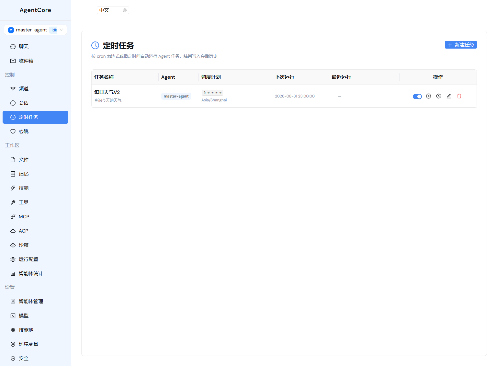
| 配置 | 说明 |
|---|---|
| 调度方式 | Cron 表达式（5 段标准格式）/ 一次性执行 |
| 常用预设 | 每天 09:00、每小时、每 5 分钟等 |
| 时区 | 支持配置时区 |
| 超时 | 单次执行的最大时间 |
| 会话模式 | 共享会话（保持上下文）/ 独立会话（每次新建） |
| 立即运行 | 手动触发一次执行 |
| 执行历史 | 查看最近 50 条执行记录（成功/失败/跳过/中断） |
❤️ 心跳巡检
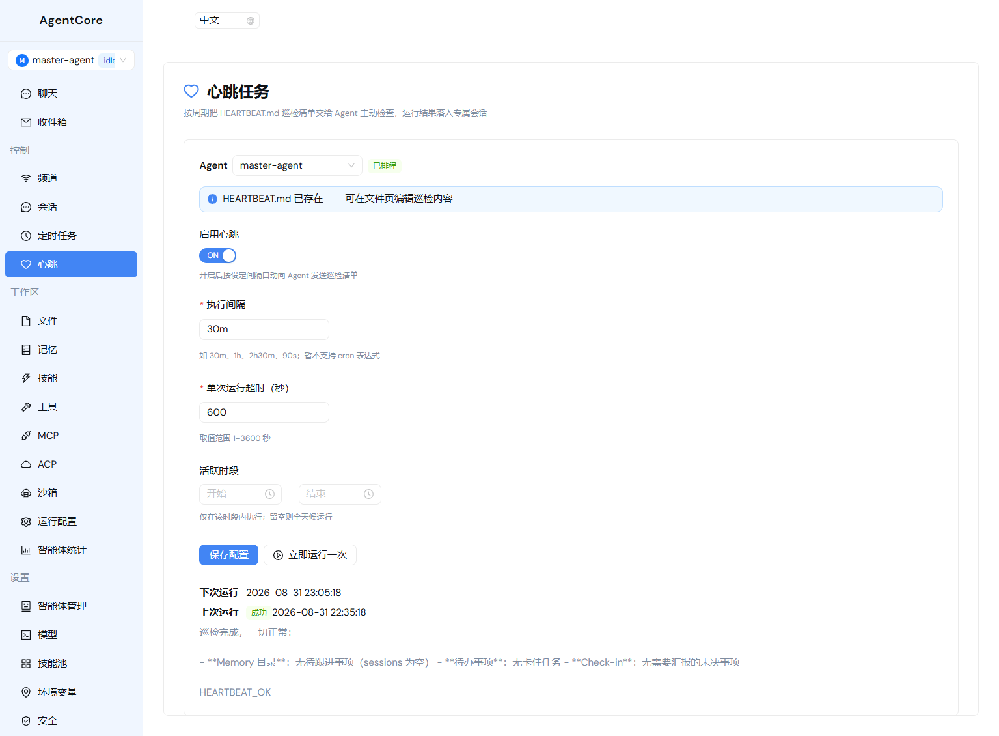
Agent 的定期健康巡检机制，按配置间隔将 HEARTBEAT.md 清单喂给 Agent 自动执行。
| 配置 | 说明 |
|---|---|
| 启用/禁用 | 开关 |
| 执行间隔 | 如 30m、1h、2h30m |
| 活跃时段 | 限制执行时间窗口（如只在工作时间执行） |
| 超时设置 | 单次巡检的最大时间 |
| 立即运行 | 手动触发一次巡检 |
⚙️ 运行配置

| 配置项 | 说明 |
|---|---|
| 系统提示词 | Agent 的身份和行为规则（编辑 agent.md） |
| 委派拓扑 | 可视化展示主 Agent 与子 Agent 的委派关系 |
| 子代理白名单 | 配置该 Agent 可以委派给哪些子 Agent |
| 模型选择 | 为该 Agent 分配 LLM 模型 |
| 委派开关 | 启用/禁用跨 Agent 委派能力 |
| 任务规划 | 启用/禁用 write_todos 工具 |
| HITL 规则 | 配置需要人工审批的工具列表 |
💻 模型管理

模型注册表
| 配置 | 说明 |
|---|---|
| 提供商 | OpenAI / Azure / Qwen / 自定义 |
| 端点 URL | API 基础 URL |
| 模型名称 | 具体模型标识 |
| API Key | 支持环境变量引用（安全存储） |
| 自定义 Headers | 额外的 HTTP 头 |
| 生成参数 | temperature、max_tokens 等 |
连接测试
- 一键测试模型端点的可用性
- 自动检测常见错误（401 认证失败、403 权限不足、429 限流等）
- 自动注入浏览器 UA 绕过 Cloudflare 反爬
🌍 环境变量

***。
🛡️ 安全配置

全局 HITL（Human-in-the-Loop）审批策略：
| 配置 | 说明 |
|---|---|
| 启用/禁用 | 全局开关 |
| 需审批工具 | 配置哪些工具的操作需要人工审批 |
| 决策类型 | 允许的审批操作类型 |
默认需审批的工具：delete、write_file、edit_file、execute
全局规则与 Agent 级别 interrupt_rules 智能合并，Agent 级配置优先。
🖥️ 沙箱管理
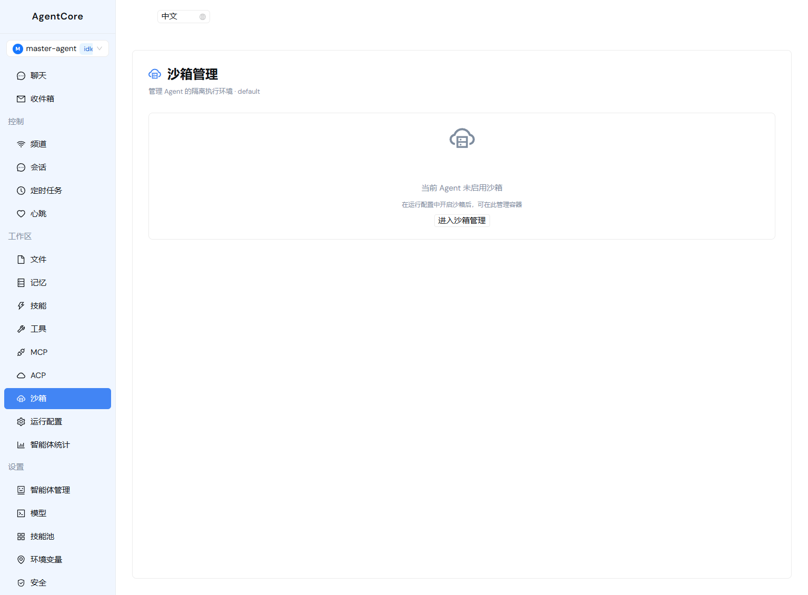
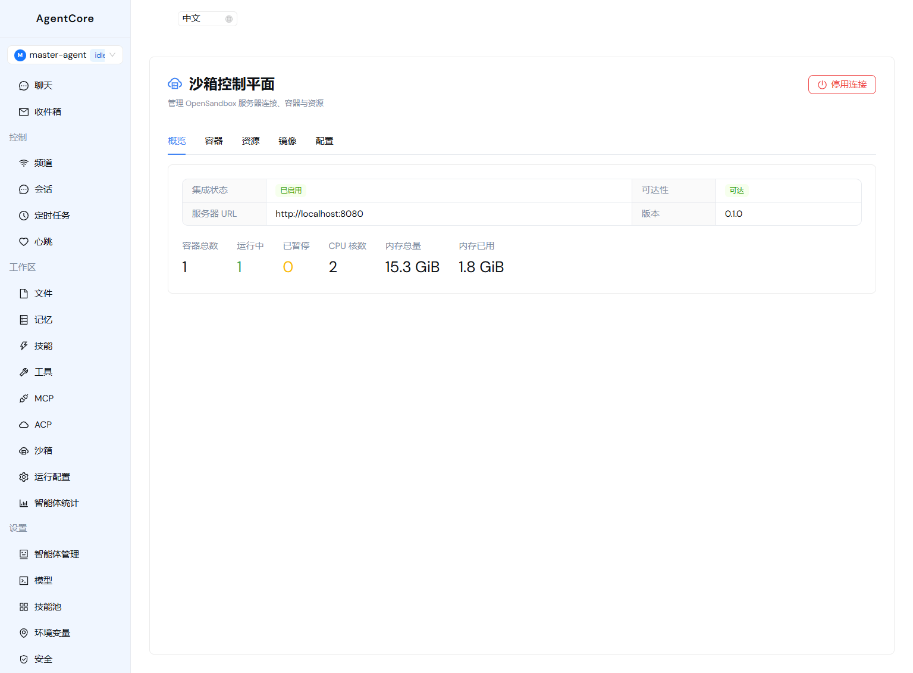
生命周期策略
| 策略 | 行为 | 适用场景 |
|---|---|---|
| 即用即销 | Agent 停止时销毁沙箱 | 开发/测试 |
| 空闲暂停 | 空闲超时后暂停，聊天时恢复 | 生产（成本敏感） |
| 长期驻留 | 持续运行直到 Agent 删除 | 长期运行任务 |
第三方沙箱后端
OpenSandbox（阿里巴巴）
通用 AI 应用沙箱平台，支持 Docker/K8s 容器编排，多语言 SDK，MCP 原生集成。
AIO Sandbox
单容器集成完整开发环境：Shell + 浏览器 + VSCode + Jupyter + MCP Hub。
📊 Token 消耗统计
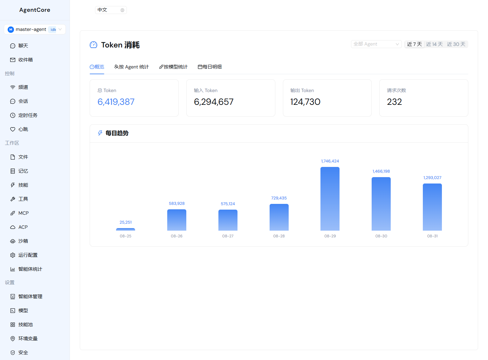
| 视图 | 说明 |
|---|---|
| 总览 | 总 Token / 输入 Token / 输出 Token |
| 趋势图 | 每日消耗折线图 |
| 按 Agent | 各 Agent 的消耗明细 |
| 按模型 | 各模型的消耗明细 |
| 时间范围 | 7 / 14 / 30 天可选 |
📬 收件箱

汇聚所有后台任务的待处理事项：
- 心跳巡检的告警
- 定时任务的审批请求
- 记忆巩固的待确认项
- 支持按 Agent 筛选
- 点击「前往审批」跳转到对应聊天页面处理
📈 智能体统计
全局仪表盘数据：
| 指标 | 说明 |
|---|---|
| Agent 总数 | 已注册的 Agent 数量 |
| 已加载数 | 当前在内存中的 Agent 数量 |
| 会话总数 | 所有 Agent 的会话总数 |
| 消息总数 | 所有会话的消息总数 |
各 Agent 的明细：状态、会话数、消息数、技能数。
🐛 调试
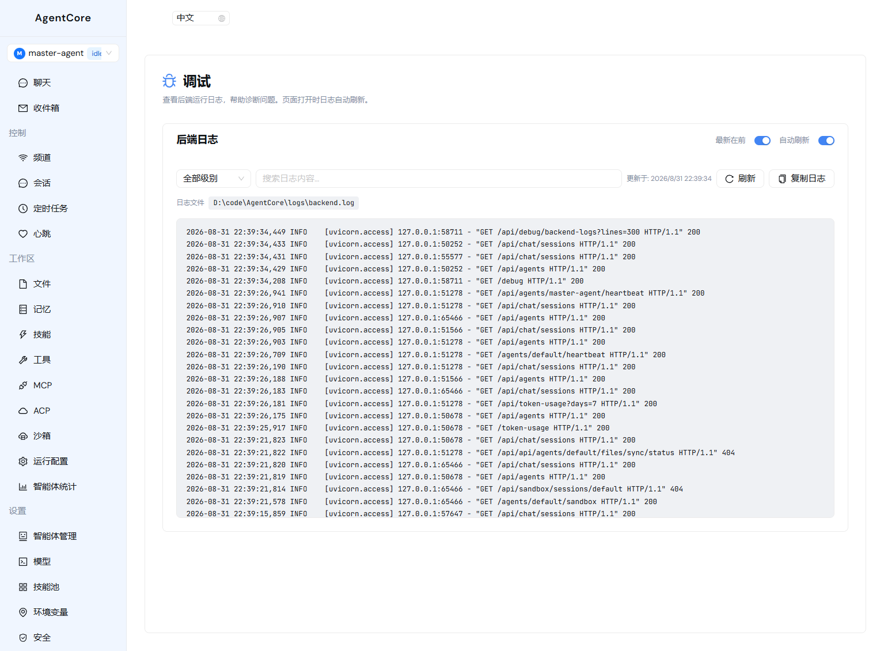
- 自动刷新（3 秒轮询）
- 日志级别过滤（ERROR / WARNING / INFO / DEBUG）
- 搜索高亮
- 最新优先排序
- 日志复制到剪贴板
🏗️ 系统架构
核心设计理念
| 理念 | 说明 |
|---|---|
| 请求驱动 | Agent 无常驻进程，每次调用在当次请求内执行图计算并返回 |
| 配置即状态 | Agent 的所有配置存储在 agent.json，是唯一事实来源 |
| 图缓存+失效 | 编译后的 LangGraph 图内存缓存，配置变更时自动失效重建 |
| 工作区隔离 | 每个 Agent 拥有独立的文件系统目录 |
| 可插拔后端 | 本地文件系统 / OpenSandbox / AIO Sandbox 可切换 |
🔄 Agent 生命周期
状态说明
| 状态 | 含义 |
|---|---|
| idle | 无在途请求，正常静息状态 |
| busy | 正在处理请求 |
| unloaded | 已卸载内存态（stop 操作后），磁盘文件保留 |
生命周期操作
| 操作 | 行为 | 可恢复性 |
|---|---|---|
| 启动（Start） | 预热加载 workspace 到内存 | — |
| 停止（Stop） | 释放内存态，磁盘文件保留 | 下次使用自动重建 |
| 重载（Reload） | 热重载 workspace，重建 Agent 图 | — |
| 删除（Delete） | 删除所有数据（工作区、会话、配置等） | ⚠️ 不可逆 |
首次对话引导
bootstrap.md 引导文件，引导完成身份设置。Agent 完成设置后会删除该文件，此后永远不会再创建。
❓ 常见问题
Q: Agent 不回复怎么办？
A: 检查模型配置是否正确、API Key 是否有效。在「模型」页面使用「测试连接」功能验证。
Q: 多 Agent 委派不生效？
A: 确保主 Agent 已开启「委派能力」，且目标子 Agent 已创建。
Q: 沙箱文件同步冲突？
A: 当本地和沙箱同时修改同一文件时会产生冲突。系统会保存 .remote-conflict 副本，请手动合并。
Q: 审批卡片不出现？
A: 检查「安全」页面是否启用了全局审批策略，以及 Agent 的 HITL 规则是否配置了对应工具。
Q: 如何备份数据？
A: 所有数据存储在 .agentcore/ 目录下。Docker 部署时数据在 agentcore-data volume 中。可手动备份整个目录。
Q: 如何升级？
A: 重新运行安装脚本即可。Docker 部署执行 docker compose pull && docker compose up -d。
AgentCore 产品说明书 v2.0 · 基于代码实际实现 · 2026-08-31
Powered by deepagents SDK · OpenSandbox · AIO Sandbox